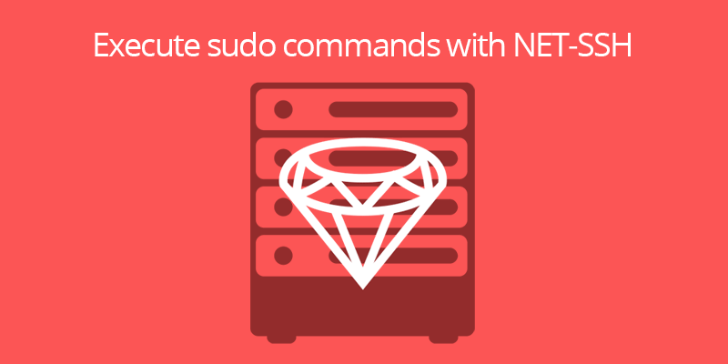

Execute sudo commands with Net::SSH

Net::SSH is a Ruby implementation of an SSH (protocol 2) client. With this gem, you can interact with remote servers and execute commands. The features from README are:
- Execute processes on remote servers and capture their output
- Run multiple processes in parallel over a single SSH connection
- Support for SSH subsystems
- Forward local and remote ports via an SSH connection
Execute commands
Net::SSH is very easy to use, we only need to connect with the server using our authentication method and execute the command. For example:
Net::SSH.start('host', 'user', password: "password") do |ssh|
# Capture all stderr and stdout output from a remote process
output = ssh.exec!("hostname")
puts output
end
Sudo commands
The best way to execute sudo commands is to add the SSH user into sudoers file with NOPASSWD policy. This action prevents they asking for the password, so you can execute them as regular commands. This is a nice article about sudoers and how to edit it.
If you need to execute a sudo command and send the password, you will need to establish a channel. The following code executes a command as sudo and stores the output in result.
result = ''
# Start SSH connection
Net::SSH.start('host', 'user', password: "password") do |ssh|
# Open a channel
channel = ssh.open_channel do |channel, success|
# Callback to receive data. It will read the
# data and store it in result var or
# send the password if it's required.
channel.on_data do |channel, data|
if data =~ /^\[sudo\] password for /
# Send the password
channel.send_data "#{@password}\n"
else
# Store the data
result += data.to_s
end
end
# Request a pseudo TTY
channel.request_pty
# Execute the command
channel.exec("sudo hostname")
# Wait for response
channel.wait
end
# Wait for opened channel
channel.wait
end
Notes
When you need to interact with the command line, you must have a tty available for the channel. If you don't request it with channel.request_pty method, the command will return:
sudo: no tty present and no askpass program specified
Another important line is channel.send_data "#{@password}\n". Don't forget to add \n at the end of the password string or the process think you don't finish the command and it will wait forever ;)